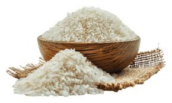
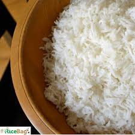

Established in 2007, Sri Laxmi Narasimha Swamy Rice Mill in Gopulapuram provides trusted and transparent rice processing services. We use modern machinery to ensure quality output with minimal grain wastage. We also provide transport facility from nearby villages at affordable charges.
Our Services
Processing Charge: ₹250 per Quintal (100kg)
✔ Rice Processing with Modern Machinery
✔ Transport Facility (Village-based charges)
✔ Accurate Weighing & Transparent Pricing
✔ Fast and Reliable Service
Gallery


Frequently Asked Questions
Do you provide transport?
Yes, transport service is available. Charges depend on village distance.
How much is the processing cost?
₹250 per quintal (100kg).
How long does processing take?
Usually same day or next day depending on quantity.